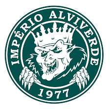

O Coritiba Foot Ball Club, mais conhecido como Coritiba, é um clube desportivo brasileiro da cidade de Curitiba. Fundado em 12 de outubro de 1909 por descendentes de alemães, é um dos clubes mais populares do Paraná e tradicionais do Sul do Brasil, sendo o mais antigo do estado, e entre os clubes campeões brasileiro. Além de ser o clube com mais títulos do Paraná.
